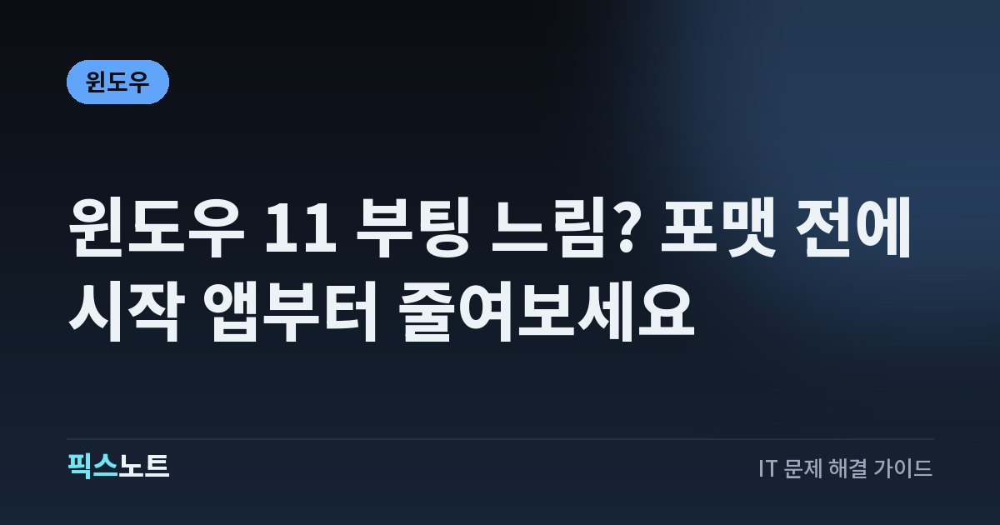

윈도우 11 부팅 느림? 포맷 전에 시작 앱부터 줄여보세요
윈도우 11 부팅이 느릴 때 시작 앱, 업데이트, 저장 공간, 충돌 프로그램을 순서대로 확인해요.

전원을 켠 뒤 바탕화면은 뜨는데 한참 버벅이거나 로그인 화면까지 오래 걸린다면 바로 포맷할 필요는 없어요. Microsoft가 안내하는 성능 점검 순서만 따라가도 시작 앱 과다, 부족한 저장 공간, 업데이트나 백그라운드 프로그램 문제를 먼저 가려낼 수 있어요.
결론부터: 포맷보다 시작 앱 확인이 먼저예요
부팅이 느려졌다고 바로 초기화하거나 포맷하면 원인을 놓치기 쉬워요. Microsoft는 Windows 성능을 개선할 때 시작 앱, 업데이트, 저장 공간, 백그라운드 작업과 전원 모드 같은 항목을 먼저 확인하도록 안내해요. 특히 로그인 직후 몇 분 동안만 디스크나 CPU 사용률이 높고 이후에는 정상으로 돌아온다면 자동 실행 앱이 많이 붙어 있을 가능성이 커요. 먼저 시작 앱을 줄여 재부팅 시간을 비교하고, 차이가 없으면 업데이트와 저장 공간으로 넘어가세요. 한 단계씩 바꿔야 어떤 조치가 실제로 효과가 있었는지 알 수 있어요.
느린 구간부터 나누면 원인 찾기가 빨라져요
같은 ‘부팅이 느리다’라도 멈추는 지점에 따라 볼 곳이 달라요. 전원 버튼을 누른 뒤 제조사 로고 단계부터 오래 걸리면 Windows 로그인 이후에 실행되는 시작 앱만으로 설명하기 어렵고, 저장장치나 펌웨어 쪽도 함께 봐야 해요. 반대로 로그인 화면은 금방 나오는데 바탕화면이 뜬 뒤 마우스와 앱이 한동안 답답하다면 시작 앱과 백그라운드 작업부터 의심하기 좋아요. 파일 열기와 프로그램 실행까지 하루 종일 느리다면 부팅 문제 하나로 보지 말고 저장 공간, 업데이트 상태, 디스크 사용률을 같이 확인하세요. 증상이 시작된 날짜와 최근 설치한 앱이나 드라이버도 메모해 두면 다음 단계가 쉬워져요.
시작 앱은 하나씩 끄고 재부팅해 비교해요
Windows는 설정의 시작 앱 화면과 작업 관리자의 시작 앱 목록에서 로그인할 때 자동으로 실행되는 프로그램을 관리할 수 있어요. 역할을 모르는 보안 프로그램이나 장치 드라이버 관련 항목을 한꺼번에 끄기보다, 매번 자동 실행될 필요가 없는 메신저·게임 런처·업데이터부터 줄이는 편이 안전해요.
- 시작 앱 목록에서 사용 빈도가 낮고 자동 실행이 필요 없는 항목을 골라 꺼요.
- 컴퓨터를 재부팅하고 로그인 뒤 버벅이는 시간이 줄었는지 확인해요.
- 변화가 없으면 다음 항목을 하나씩 조정하고, 문제가 생기면 바로 다시 켜요.
업데이트와 드라이버는 적용 상태까지 확인해요
Microsoft는 성능 문제가 있을 때 Windows 업데이트와 선택적 업데이트에 제공되는 드라이버를 확인하도록 안내해요. 업데이트를 내려받기만 하고 재부팅하지 않았거나, 큰 업데이트 직후 후속 작업이 남아 있으면 평소보다 부팅과 로그인 직후가 무거울 수 있어요.
- Windows 업데이트에서 대기 중인 항목이 있는지 확인하고 설치해요.
- 선택적 업데이트에 장치 드라이버가 보이면 어떤 장치용인지 확인한 뒤 필요한 것만 적용해요.
- 설치가 끝나면 재부팅하고 이전과 같은 조건에서 부팅 시간을 비교해요.
저장 공간이 부족하면 정리 뒤 다시 측정해요
시스템 드라이브가 거의 가득 차 있으면 Windows가 임시 파일을 만들고 업데이트를 처리할 여유가 줄어들어요. Microsoft는 Storage Sense와 저장 공간 정리를 성능 개선 방법으로 안내하고 있어요. 다운로드 폴더나 중요한 문서를 무작정 지우기보다 휴지통, 임시 파일, 오래 쓰지 않은 앱처럼 다시 만들거나 다시 설치할 수 있는 항목부터 정리하세요. 정리 전에는 여유 공간을 기록하고, 정리 뒤 재부팅해서 실제 체감이 달라졌는지 비교하면 좋아요. SSD 자체에 오류 메시지, 파일 복사 중 멈춤, 파일 열기 지연까지 함께 나타난다면 중요한 자료를 먼저 백업하고 저장장치 상태를 별도로 점검하세요.
작업 관리자와 클린 부팅으로 충돌 범위를 좁혀요
시작 앱을 줄이고 업데이트와 저장 공간도 확인했는데 계속 느리다면 작업 관리자에서 로그인 직후 CPU, 메모리, 디스크를 오래 점유하는 프로세스가 있는지 살펴보세요. 특정 프로그램을 설치한 직후부터 문제가 시작됐다면 그 프로그램의 자동 시작을 끄거나 최신 버전 여부를 확인해요. 그래도 원인이 보이지 않을 때 Microsoft의 클린 부팅 절차를 이용하면 타사 서비스와 시작 프로그램 충돌 여부를 좁힐 수 있어요. 클린 부팅은 평소 계속 쓰는 최적화 모드가 아니라 원인 확인용 절차예요. 문제를 재현한 뒤에는 어떤 항목을 껐는지 기록하고 원래 시작 상태로 되돌릴 수 있게 준비해 두세요.
초기화는 마지막에 두고 백업부터 챙겨요
부팅 지연이 계속된다고 바로 초기화하면 개인 설정과 앱을 다시 구성해야 하고, 원인이 하드웨어나 특정 드라이버라면 같은 문제가 다시 생길 수도 있어요. 먼저 시작 앱, 업데이트, 저장 공간, 자원 사용량, 최근 설치 프로그램 순서로 확인한 기록을 남겨두세요. 중요한 파일은 외장 저장장치나 신뢰할 수 있는 백업 위치에 복사해 두고, 저장장치 오류 징후가 있으면 진단보다 백업을 먼저 해요. 그다음에도 느리다면 제조사 지원이나 Microsoft 지원에 증상 시작 시점, Windows 버전, 최근 업데이트 여부, 작업 관리자에서 비정상적으로 높았던 항목을 함께 전달하세요. 이렇게 준비하면 불필요한 초기화를 줄이고 다음 진단 단계도 빨라져요.
자주 묻는 질문
윈도우 11 시작프로그램을 많이 끄면 문제가 생기나요?
매번 자동 실행될 필요가 없는 앱을 끄는 것은 괜찮지만, 보안 프로그램이나 장치 제어 소프트웨어처럼 역할을 모르는 항목은 함부로 끄지 않는 편이 좋아요. 하나씩 바꾸고 재부팅해 문제가 없는지 확인하세요.
업데이트 직후 부팅이 한 번 느린 것도 고장 신호인가요?
큰 업데이트 뒤에는 설치 마무리나 백그라운드 작업 때문에 일시적으로 느릴 수 있어요. 업데이트가 끝났는지 확인하고 재부팅한 뒤에도 같은 증상이 반복되는지 먼저 비교해 보세요.
윈도우 부팅이 느리면 SSD부터 교체해야 하나요?
부팅뿐 아니라 파일 열기, 복사, 앱 실행까지 함께 느려지고 오류나 멈춤이 반복될 때 저장장치 문제 가능성을 더 의심해요. 교체부터 하기보다 중요한 자료를 백업하고 상태를 점검한 뒤 판단하세요.
클린 부팅은 계속 켜 두고 써도 되나요?
클린 부팅은 타사 서비스나 시작 프로그램 충돌을 찾기 위한 진단 절차예요. 원인을 좁힌 뒤에는 필요한 서비스와 시작 항목을 다시 켜고 정상 시작 상태로 되돌리는 편이 좋아요.